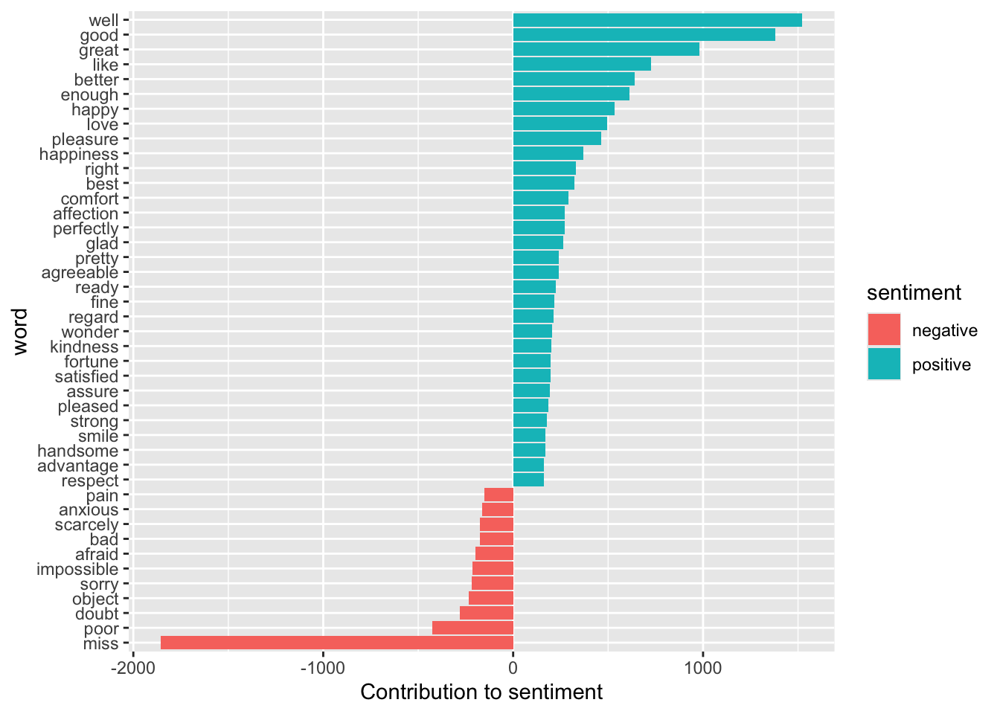
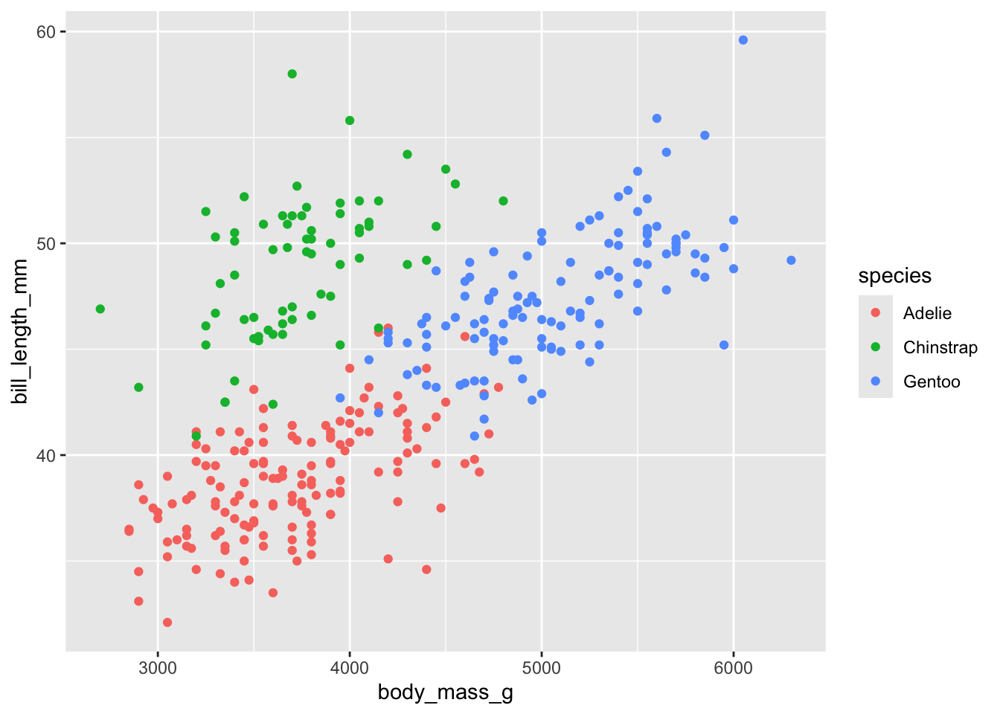

── Conflicts ────────────────────────────────────────── tidyverse_conflicts() ──
✖ dplyr::filter() masks stats::filter()
✖ dplyr::lag() masks stats::lag()
ℹ Use the conflicted package (<http://conflicted.r-lib.org/>) to force all conflicts to become errors
There are 4 basic families of functions in the {stringr} package:
Manipulation: these functions allow you to manipulate individual characters within the strings in character vectors.
Whitespace tools to add, remove, and manipulate whitespace.
Locale sensitive operations whose operations will vary from locale to locale.
Pattern matching functions. These recognize four engines of pattern description. The most common is regular expressions, but there are three other tools.
Manipulation
Paste words together. This can be useful if say you have a two columns of treatments and you want to combine them into one (e.g., high temp, low temp and high pH, low pH).
Examples:
Now it is one sentence as opposed to two sentences.
paste("High temp", "Low pH")
[1] "High temp Low pH"
Add a dash in between the words
paste("High temp", "Low pH", sep ="-")
[1] "High temp-Low pH"
Remove the space in between the words.
paste0("High temp", "Low pH")
[1] "High tempLow pH"
Working with vectors
shapes <-c("Square", "Circle", "Triangle")paste("My favorite shape is a", shapes) # shapes is not in quotes because it is an object
[1] "My favorite shape is a Square" "My favorite shape is a Circle"
[3] "My favorite shape is a Triangle"
For example, if creating multiple site names. “My site is”, sites
two_cities <-c("best", "worst")paste("It was the", two_cities, "of times.")
[1] "It was the best of times." "It was the worst of times."
This is very useful when making labels for your plots.
Can use this with mutate(new_treatment = paste(“Treatment_A”, “Treatment_B”)) to change columns.
Manipulation: individual characters
Let’s say you want to know how long a string is:
shapes # vector of shapes
[1] "Square" "Circle" "Triangle"
str_length(shapes) # how many letters are in each word?
[1] 6 6 8
Let’s say you want to extract specific characters. Do you work with sequence data? This could be super useful to exact specific bases in a sequence.
seq_data<-c("ATCCCGTC")str_sub(seq_data, start =2, end =4) # extract the 2nd to 4th AA
[1] "TCC"
sub = subset, extracts 2nd to 4th.
You can also modify strings.
str_sub(seq_data, start =3, end =3) <-"A"# add an A in the 3rd positionseq_data
[1] "ATACCGTC"
Allows for infinity number of replacements.
You can also duplicate patterns in your strings. Here I am duplicating it 2 and 3 times
str_dup(seq_data, times =c(2, 3)) # times is the number of times to duplicate each string
[1] "ATACCGTCATACCGTC" "ATACCGTCATACCGTCATACCGTC"
Take sequence data and duplicate it 2 times and then 3 times
Whitespace
Say you have a column and you did not copy and paste your treatments like you learned in the first week of class. You now have some words with extra white spaces and R thinks its an entirely new word. Here is how to deal with that…
There’s spaces in the column, this is a great way to get rid of that.
Remove white space.
str_trim(badtreatments) # this removes whitespace on both left and right hand side
[1] "High" "High" "High" "Low" "Low"
You can also just remove from one side or the other.
str_trim(badtreatments, side ="left") # this removes left
[1] "High" "High" "High " "Low" "Low"
The opposite of str_trim is str_pad, to add white space to either side
str_pad(badtreatments, 5, side ="right") # add a white space to the right side after the 5th character
[1] "High " " High" "High " "Low " "Low "
add a character instead of white space
str_pad(badtreatments, 5, side ="right", pad ="1") # add a 1 to the right side after the 5th character
[1] "High1" " High" "High " "Low11" "Low11"
Use str_trim first then use str_pad. E.g. to add a bunch of zeros to a row in data.
Locale sensitive
Important, these will perform differently in different places in the world/with different languages. The default is English, but you can set the language setting.
If there’s upper and lower cases in data.
Make everything All caps (upper case)
x<-"I love R!"str_to_upper(x)
[1] "I LOVE R!"
Make it lower case.
str_to_lower(x)
[1] "i love r!"
Make it title case (Cap first letter of each word)
str_to_title(x)
[1] "I Love R!"
Pattern matching
{stringr} has functions to view, detect, locate, extract, match, replace, and split strings based on specific patterns.
View a specific pattern in a vector of strings.
data<-c("AAA", "TATA", "CTAG", "GCTT")
# find all the strings with an Astr_view(data, pattern ="A")
[1] │ <A><A><A>
[2] │ T<A>T<A>
[3] │ CT<A>G
Views it on your computer but doesn’t save anything.
Detect a specific pattern
str_detect(data, pattern ="A")
[1] TRUE TRUE TRUE FALSE
for logicals
str_detect(data, pattern ="AT")
[1] FALSE TRUE FALSE FALSE
Locate a pattern.
str_locate(data, pattern ="AT")
start end
[1,] NA NA
[2,] 2 3
[3,] NA NA
[4,] NA NA
But, what if we want to search for something more complicated than that… like find all the numbers, letters, or special characters.
Regular expressions are hard and a pain in the butt… but, are very helpful to learn.
Actual image of my trying to use regex…
There are several types of regular expressions:
Metacharacters
Sequences
Quantifiers
Character classes
POSIX character classes (Portable Operating System Interface)
Metacharacters
Metacharacters: The simplest form of regular expressions are those that match a single character. Most characters, including all letters and digits, are regular expressions that match themselves. For a language like R, there are some special characters that have reserved meaning and they are referred to as ’Metacharacters”. The metacharacters in Extended Regular Expressions (EREs) are:
Aside about the functions
Each function in {stringr} has two forms a basic form that searches for the first instance of a character and a *_all that searches for all instances. For example:
Let’s say we had multiple “.” in our character vector
Sequences
Sequences, as the name suggests refers to the sequences of characters which can match. We have shorthand versions (or anchors) for commonly used sequences in R:
Sequences
Find any string that has a number in it and any that doesn’t for example.
Let’s subset the vector to only keep strings with digits
Character class
A character class or character set is a list of characters enclosed by square brackets [ ]. Character sets are used to match only one of the different characters. For example, the regex character class [aA] matches any lower case letter a or any upper case letter A.
Let’s count the number of lowercase vowels in each string
str_count(val2, "[aeiou]")
[1] 1 1 1
# count any digitstr_count(val2, "[0-9]")
[1] 3 3 0
Quantifiers
symbol Meaning
^ Beginning of String
$ End of String Newline (not the )
+ One or More of Previous
* Zero or More of Previous
? Zero or One of Previous
{5} Exactly 5 of Previous
{2, 5} Between 2 and 5 or Previous
{2, } More than 2 of Previous
Make a regex that finds all the strings that contain a phone number. We know there is a specific pattern (3 numbers, 3 numbers, 4 numbers and it can have either a “.” or “-” to separate them). Let’s also say we know that the first number cannot be a 1
This is saying:
Look for the number 2-9 in first digit.
Look for any number x2. Look for a - or a .
Look for any 3 and then 4 numbers.
Called the regex, “phone”.
# Which strings contain phone numbers?str_detect(strings, phone)
[1] TRUE FALSE TRUE TRUE
Subset it so it deletes “banana”
# subset only the strings with phone numberstest<-str_subset(strings, phone)test
Let’s clean it up. Lets replace all the “.” with “-” and extract only the numbers (leaving the letters behind). Remove any extra white space. You can use a sequence of pipes.
test %>%str_replace_all("\\.", "-") %>%str_replace_all("[a-z]|\\:", "") %>%str_trim()
[1] "550-153-7578" "435-114-7586" "672-442-6739"
Answer:
test %>%str_replace_all(pattern ="\\.", replacement ="-") %>%# replace periods with -str_replace_all(pattern ="[a-zA-Z]|\\:", replacement ="") %>%# remove all the things we don't wantstr_trim() # trim the white space
[1] "550-153-7578" "435-114-7586" "672-442-6739"
Don’t need to add the “pattern = or replacement =”.
tidytext
Package for text mining and making text tidy. This is very helpful for social sciences or anyone that uses survey data. Also, really helpful for text mining abstracts to write a review paper on a topic.
Let’s analyze a books by Jane Austen.
The function to get all of the text from all of Jane Austen’s books is austen_books()
DO NOT USE View() BECAUSE YOUR COMPUTER WILL CRASH!
# explore ithead(austen_books())
# A tibble: 6 × 2
text book
<chr> <fct>
1 "SENSE AND SENSIBILITY" Sense & Sensibility
2 "" Sense & Sensibility
3 "by Jane Austen" Sense & Sensibility
4 "" Sense & Sensibility
5 "(1811)" Sense & Sensibility
6 "" Sense & Sensibility
tail(austen_books())
# A tibble: 6 × 2
text book
<chr> <fct>
1 "possible, more distinguished in its domestic virtues than in its" Persuasion
2 "national importance." Persuasion
3 "" Persuasion
4 "" Persuasion
5 "" Persuasion
6 "Finis" Persuasion
Let’s clean it up and add a column for line and chapter
original_books <-austen_books() %>%# get all of Jane Austen's booksgroup_by(book) %>%mutate(line =row_number(), # find every linechapter =cumsum(str_detect(text, regex("^chapter [\\divxlc]", # count the chapters (starts with the word chapter followed by a digit or roman numeral)ignore_case =TRUE)))) %>%#ignore lower or uppercaseungroup() # ungroup it so we have a dataframe again# don't try to view the entire thing... its >73000 lines...head(original_books)
# A tibble: 6 × 4
text book line chapter
<chr> <fct> <int> <int>
1 "SENSE AND SENSIBILITY" Sense & Sensibility 1 0
2 "" Sense & Sensibility 2 0
3 "by Jane Austen" Sense & Sensibility 3 0
4 "" Sense & Sensibility 4 0
5 "(1811)" Sense & Sensibility 5 0
6 "" Sense & Sensibility 6 0
cumulative sum replacing whatever was on that line, analysis by chapter
ignore_case shows that the whole regex( ) is an expression
Because we are interest in text mining, we will want to clean this so that there is only one word per row so its tidy. In tidytext each word is refered to as a token. The function to unnest the data so that its only one word per row is unnest_tokens().
tidy_books <- original_books %>%unnest_tokens(output = word, input = text) # add a column named word, with the input as the text columnhead(tidy_books) # there are now >725,000 rows. Don't view the entire thing!
# A tibble: 6 × 4
book line chapter word
<fct> <int> <int> <chr>
1 Sense & Sensibility 1 0 sense
2 Sense & Sensibility 1 0 and
3 Sense & Sensibility 1 0 sensibility
4 Sense & Sensibility 3 0 by
5 Sense & Sensibility 3 0 jane
6 Sense & Sensibility 3 0 austen
Output: what you want column name to be.
Input: the text
OK so we now have >735,000 rows of words…. but, some of these words are kind of useless. Words that are common and don’t really have important meaning (e.g. “and”,“by”,“therefore”…). These are called stopwords. We can use the function “get_stopwords()” to essentially remove these words from our dataframe. (This function is essentially just a dataframe of unnecessary words)
#see an example of all the stopwordshead(get_stopwords())
# A tibble: 6 × 2
word lexicon
<chr> <chr>
1 i snowball
2 me snowball
3 my snowball
4 myself snowball
5 we snowball
6 our snowball
Create our own set of stuff to exclude or include.
A bunch of words we can say we dont care about and remove it from her books.
Use what we know from joins to remove all the stopwords
cleaned_books <- tidy_books %>%anti_join(get_stopwords()) # dataframe without the stopwords
Joining with `by = join_by(word)`
column was called “word” already so don’t need to rename.
head(cleaned_books)
# A tibble: 6 × 4
book line chapter word
<fct> <int> <int> <chr>
1 Sense & Sensibility 1 0 sense
2 Sense & Sensibility 1 0 sensibility
3 Sense & Sensibility 3 0 jane
4 Sense & Sensibility 3 0 austen
5 Sense & Sensibility 5 0 1811
6 Sense & Sensibility 10 1 chapter
Let’s count the most common words across all her books
cleaned_books %>%# clean books data frame, pipe to count word columncount(word, sort =TRUE)
# A tibble: 14,375 × 2
word n
<chr> <int>
1 mr 3015
2 mrs 2446
3 must 2071
4 said 2041
5 much 1935
6 miss 1855
7 one 1831
8 well 1523
9 every 1456
10 think 1440
# ℹ 14,365 more rows
Example of when to use: how many times does the word “coral” show up?
How would we modify this code to count the most popular words by book? What about by each chapter within a book?
sentiment analysis
There are many ways that we can now analyze this tidy dataset of text. One example is we could do a sentiment analysis (how many positive and negative words) using get_sentiments(). An important note: I was not an English major and I know there are many different lexicons, but I know nothing about them. Look at the help files if you want to go deeper into this…
sent_word_counts <- tidy_books %>%inner_join(get_sentiments()) %>%# only keep pos or negative wordscount(word, sentiment, sort =TRUE) # count them
Joining with `by = join_by(word)`
Warning in inner_join(., get_sentiments()): Detected an unexpected many-to-many relationship between `x` and `y`.
ℹ Row 435434 of `x` matches multiple rows in `y`.
ℹ Row 5051 of `y` matches multiple rows in `x`.
ℹ If a many-to-many relationship is expected, set `relationship =
"many-to-many"` to silence this warning.
head(sent_word_counts)[1:3,]
# A tibble: 3 × 3
word sentiment n
<chr> <chr> <int>
1 miss negative 1855
2 well positive 1523
3 good positive 1380
inner_join only keeps things found in data frame that you’re bringing in.
get_sentiment lexicon counts “miss” as a negative
Now, think about how we could do this with science? Instead of get_sentiments(), you could use an inner_join with a vector of keywords that you are searching for.
–> put in a data frame and find and count key words we’re looking for in abstracts.
Let’s plot it.
We can now use ggplot to visualize counts of positive and negative words in the books
sent_word_counts %>%# data cleaningfilter(n >150) %>%# take only if there are over 150 instances of it, filter nmutate(n =ifelse(sentiment =="negative", -n, n)) %>%# add a column where if the word is negative make the count negative, if sentiment says its negative, make n negative if not keep it positivemutate(word =reorder(word, n)) %>%# sort it so it gows from largest to smallestggplot(aes(word, n, fill = sentiment)) +# now make plotgeom_col() +coord_flip() +# flip axes labs(y ="Contribution to sentiment")

Make a wordcloud
Use the {wordcloud} package to make an interactive word cloud
hover or press the word it shows you how many times it appears in the book (n)
words<-cleaned_books %>%count(word) %>%# count all the wordsarrange(desc(n))%>%# sort the words in descending orderslice(1:100) #take the top 100wordcloud2(words, shape ='triangle', size=0.3) # make a wordcloud out of the top 100 words
Today’s totally awesome R package {ggirl} (gg in real life) Have you ever made a plot that you love so much and thought, “I want to send this to someone!” Well, now you can! Turn your ggplots into a postcard. (Note, I wouldn’t be mad if random postcards of ggplot showed up in my mailbox…)
I am just going to give you a little taste of what each of these packages can do. Please check out the documentation for each to delve deeper.
Load Libraries
library(tidyverse)library(here)library(patchwork) # for bringing plots togetherlibrary(ggrepel) # for repelling labelslibrary(gganimate) # for animationslibrary(magick) # for images
cowplot and ggrid also can be used but Nyssa likes patchwork the best
Two simple plots from Palmer penguin dataset:
# plot 1p1<-penguins %>%ggplot(aes(x = body_mass_g, y = bill_length_mm, color = species))+geom_point()p1
Warning: Removed 2 rows containing missing values or values outside the scale range
(`geom_point()`).

# plot 2p2<-penguins %>%ggplot(aes(x = sex, y = body_mass_g, color = species))+geom_jitter(width =0.2)p2
Warning: Removed 2 rows containing missing values or values outside the scale range
(`geom_point()`).
Bring the plots together using simple operations.
Want them to be together in one subplot
p1+p2 +# puts them togetherplot_layout(guides ='collect') +# group the legendsplot_annotation(tag_levels ='A') # add labels (A, B)
Warning: Removed 2 rows containing missing values or values outside the scale range
(`geom_point()`).
Removed 2 rows containing missing values or values outside the scale range
(`geom_point()`).
Put one plot on top of the other.
p1/p2 +# dividing them puts one on top of eachotherplot_layout(guides ='collect')+# guides is another word for legendplot_annotation(tag_levels ='A') # adds a tag (roman numerals and numbers too)
Warning: Removed 2 rows containing missing values or values outside the scale range
(`geom_point()`).
Removed 2 rows containing missing values or values outside the scale range
(`geom_point()`).
So many cool ways to bring together and modify plots. For more info see the many vignettes here.
ggrepel
Easy and clear labels for plots.
Use the mtcars dataset that comes with it. It is data on cars. Automatically comes with ggplot
View(mtcars) # cars and mpg data and weights of cars
Simple Plot
ggplot(mtcars, aes(x = wt, # weighty = mpg, # miles per gallonlabel =rownames(mtcars))) +# every point has a label, extract row namesgeom_text() +# takes whatever you put into label and creates a text label at every x and y coordinategeom_point(color ='red')
Repel the labels
ggplot(mtcars, aes(x = wt, y = mpg, label =rownames(mtcars))) +geom_text_repel() +# repel them away from the points for readability, attaches line from text to the pointgeom_point(color ='red')
Use label function
ggplot(mtcars, aes(x = wt, y = mpg, label =rownames(mtcars))) +geom_label_repel() +# repel them with a box around the text, choose text or label depending on the aesthetic you wantgeom_point(color ='red')
Warning: ggrepel: 6 unlabeled data points (too many overlaps). Consider
increasing max.overlaps
Let’s go back to our penguin plot, but animate the figure by year. This has all the years. Our static plot.
penguins %>%ggplot(aes(x = body_mass_g, y = bill_depth_mm, color = species)) +geom_point()
Warning: Removed 2 rows containing missing values or values outside the scale range
(`geom_point()`).
Say you want to highlight how relationships change from year to year. So animate points from first year to last year.
Add a transition.
penguins %>%ggplot(aes(x = body_mass_g, y = bill_depth_mm, color = species)) +geom_point() +# add a transition heretransition_states(year, # what are we animating by, in this case it is yeartransition_length =2, #The relative length of the transition.state_length =1) # The length of the pause between transitions
Every new animation is by year. How long does it take to go from one year to the next (2 seconds in this case)
The pause between transitions is 1 second.
Change the ease aesthetics
ease_aes –> change how it moves from one state to the next
penguins %>%ggplot(aes(x = body_mass_g, y = bill_depth_mm, color = species)) +geom_point() +# add a transition heretransition_states(year, # what are we animating bytransition_length =2, #The relative length of the transition.state_length =1) +# The length of the pause between transitionsease_aes("bounce-in-out") # change the ease aesthetics
Some examples:
linear (default)
bounce
sine
circular
many more…
Add a transition title to labs() argument and save it
penguins %>%ggplot(aes(x = body_mass_g, y = bill_depth_mm, color = species)) +geom_point() +transition_states( year, # what are we animating bytransition_length =2, #The relative length of the transition.state_length =1# The length of the pause between transitions )+ease_aes("sine-in-out") # +# labs(title = 'Year: {closest_state}') + # transition title 'Year: {}' colon tells you want you want it to say, whatever is in bracket is the argument that is used to say what state you are in right now
To save:
anim_save(here(“Week_08”,“Output”,“mypengiungif.gif”)) # save it as a .gif and portable
‘Year:’ would stay static.
The { } would say what you want it to be in
Put a penguin in it.
Read in an image of a pengiun (can be on your computer or the internet).
either read it in from your output folder or put the link.
Needs to be in .png or .jpg
Read in the plot as a magick image and make a composite plot
penplot<-image_read(here("Week_08","Output","penguinplot.png")) # read png file back in using image_readout <-image_composite(penplot, penguin, offset ="+70+30") # put them on top of each other, background goes first, second layer goes next, offset tells you where you want penguin to beout
Can do this with gifs too
# Read in a penguin gifpengif<-image_read("https://media3.giphy.com/media/H4uE6w9G1uK4M/giphy.gif") # found on internet, use image_readoutgif <-image_composite(penplot, pengif, gravity ="center") # move the image (this puts it in middle of plot)animation <-image_animate(outgif, fps =10, optimize =TRUE) # put it in image animate, 10 is low quality so doesnt take up much space on computeranimation # can save with animation save as well


{kind=link}
{kind=link}
{kind=link}